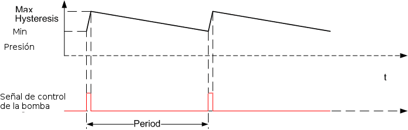

El algoritmo de control que se usa en el sistema de frenos obedece a las siguientes ideas:
1.Principio de diseño "Fail/Safe": este principio establece que un dispositivo que control una parte importante de un sistema debe estar diseñado de forma tal que, si falla, deja al sistema en una posición "segura".
2.Permitir una parada rápida del Tren de Potencia. Esta necesidad viene del uso secundario del mecanismo de frenos como "alternativa de seguridad", en caso de que el Tren de Potencia no pueda ser frenado por medios aerodinámicos.
3.Minimización del numero de sensores y actuadores.
Este mecanismo de freno del tren de potencia NO es el mecanismo utilizado para operaciones de parada (cutout): estas operaciones se realizan utilizando métodos aerodinámicos, es decir, utilizando las palas, cambiando su angulo de ataque, o, en algunos modelos antiguos que no tenían mecanismo de cambio de pitch, mediante un cambio en la forma. Ver siguiente figura.

Sin embargo, en condiciones excepcionales, por ejemplo, cuando falla el mecanismo de pitch, o se han sobrepasado determinadas rpms en el tren de potencia, o se necesita una parada muy rápida, el Controlador utiliza, también, el freno hidráulico.
En el diseño elegido la posición de "reposo" es con la zapata apretada contra el disco de freno por el muelle del cilindro. Esto sigue el principio de funcionamiento 'Fail/Save' (si algo va mal, el mecanismo queda en una posición segura), en este caso la posición segura es parada del tren de potencia.
Cuando el aerogenerador está en producción, la zapata está alejada del disco, con lo que no interfiere en el movimiento del tren de potencia. Para que esto ocurra es necesario contrarrestar la presión del muelle en el cilindro que fuerza la zapata. Esto se consigue aumentando la presión hidráulica que se aplica a la base del muelle. El aumento de esta presión se consigue: poniendo la válvula en posición 'cerrada' y la bomba en marcha.

Cuando se quiere frenar (zapata contra el disco) basta con reducir la presión hidráulica en la base del muelle. Esto se consigue abriendo la válvula. Habitualmente hay mas de una válvula, con diferentes caudales, de forma que se puede graduar (hasta cierto punto) la velocidad de la bajada de presión, y por tanto de la frenada.
Por último, en el diseño de este circuito, se utilizan un mínimo de elementos: una bomba, un calderín para el liquido, la(s) válvulas, el presostato (no indicado) y el sensor de separación de la zapata (no indicado).
El estado de la zapata de freno no es medido mediante ningún sensor, sino que es deducido por el Controlador durante la fase de arranque (cutin). El procedimiento consiste en aplicar un par mecánico importante al tren de potencia, mientras se mantiene el freno hidráulico activo (zapata contra el disco). Este par mecánico se consigue orientando la Góndola al viento y poniendo un valor de pitch que garantiza el máximo aprovechamiento del viento con valores de giro bajos (es decir, con TSR prácticamente 0). En esas circunstancias se monitoriza la velocidad de giro del tren de potencia: si no es 0 (parado) es debido a algún problema relativo a la zapata, o al muelle del cilindro; en estas circunstancias se aborta la operación de cutin.
La bomba es usada para mantener la presión en la base del muelle a un valor que garantiza que, en producción, la zapata no roza el disco de freno. Para ello no se mide esta presión, sino que se utiliza un dispositivo más robusto, un presostato, calibrado alrededor de la presión deseada. De esta forma el Controlador solo recibe una señal digital (la salida del presostato) y tiene que controlar dos señales también digitales: el control de la bomba y el control de la(s) válvula(s). Existe también un contacto fin de carrera que se activa cuando la zapata esta ya separada del disco de freno. Esta señal corresponde a la señal asociada al botón 'Freno liberado'. El valor de la presión a la que, típicamente, se activa esta señal corresponde con la marca 'amarilla' en el indicador circular de la presión del circuito hidráulico.
La evolución de las señales relacionadas con este circuito hidráulico se puede observar usando uno de los "Paneles de registradores predefinidos" (pulsando en el sinóptico de control de ejecución: 'Sinopticos' --> 'Registradores' se presenta un formulario de registrador, y en 'Paneles definidos' seleccione 'Circuito hidraulico de frenos'). Puede observar la variación de diversas señales del circuito hidráulico durante diferentes situaciones de funcionamiento y parada.
Los conceptos básicos de control están basados en la histéresis del presostato, cuya salida es utilizada por el Controlador para poner en marcha la bomba cuando su valor es 'Off', es decir, la presión está por debajo del limite inferior de calibración del presostato. Y parar la bomba cuando la presión supera el límite superior del presostato. Se asume que las válvulas están cerradas. La siguiente figura ejemplifica este método de control.
